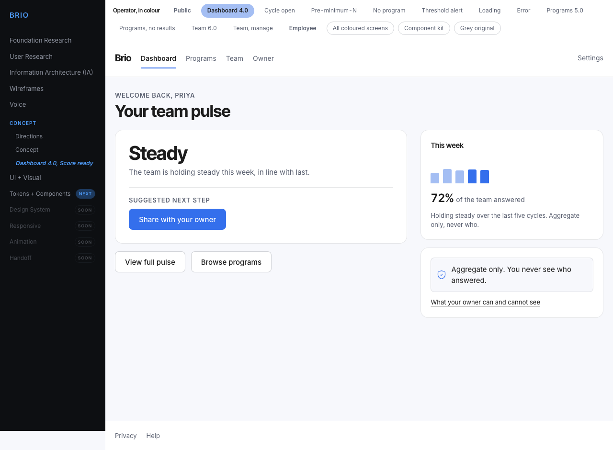
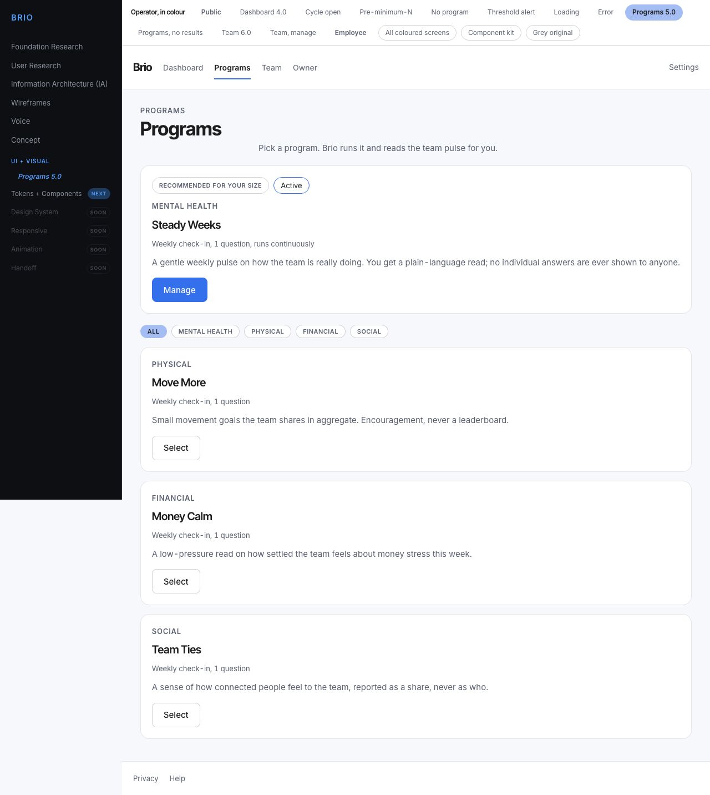
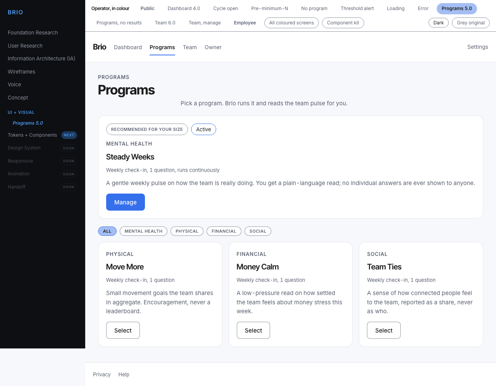
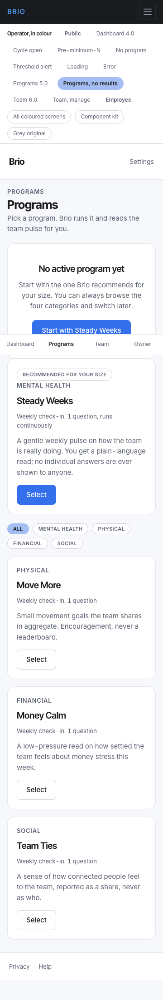

Verification
Proof and audit
The stage changed the architecture and, in three named places, the look. This page is the evidence: what moved, why it was allowed to move, what was checked and by which instrument.
The pixel comparison, screen by screen
Zero was never the target. This stage legally changed what the product looks like in three places, each one written down in docs/tokens-audit.md under a named list. So the test is not "did nothing change" but can every difference be attributed to a line in one of those lists.
The comparison was not made by eye and not by comparing pictures. Both versions were walked in a browser, and every element of every screen was compared property by property on its computed style: colour, fill, border, radius, type, weight, leading, every padding and margin, min height, the measured box. That is stricter than a pixel diff and it names the element rather than lighting up a region. 554 differences across 24 screens and two viewports, and all 554 fall into three causes. Nothing is unexplained, and no line of the three lists is without a difference to point at.
| Screen | Viewport | Differences | What explains them |
|---|---|---|---|
| checkin-already | 360 | none | identical, property for property |
| checkin-already | 1280 | none | identical, property for property |
| checkin-complete | 360 | none | identical, property for property |
| checkin-complete | 1280 | none | identical, property for property |
| checkin-entry | 360 | 8 | 8 × the control boundary raised from 1.5:1 to 3.19:1, foundation review |
| checkin-entry | 1280 | 8 | 8 × the control boundary raised from 1.5:1 to 3.19:1, foundation review |
| checkin-expired | 360 | 4 | 4 × the control boundary raised from 1.5:1 to 3.19:1, foundation review |
| checkin-expired | 1280 | 4 | 4 × the control boundary raised from 1.5:1 to 3.19:1, foundation review |
| checkin-privacy | 360 | none | identical, property for property |
| checkin-privacy | 1280 | none | identical, property for property |
| checkin-questions | 360 | 12 | 12 × the control boundary raised from 1.5:1 to 3.19:1, foundation review |
| checkin-questions | 1280 | 12 | 12 × the control boundary raised from 1.5:1 to 3.19:1, foundation review |
| checkin-questions-loading | 360 | 8 | 8 × the control boundary raised from 1.5:1 to 3.19:1, foundation review |
| checkin-questions-loading | 1280 | 8 | 8 × the control boundary raised from 1.5:1 to 3.19:1, foundation review |
| checkin-submit-error | 360 | none | identical, property for property |
| checkin-submit-error | 1280 | none | identical, property for property |
| contact | 360 | 12 | 12 × the control boundary raised from 1.5:1 to 3.19:1, foundation review |
| contact | 1280 | 12 | 12 × the control boundary raised from 1.5:1 to 3.19:1, foundation review |
| contact-sent | 360 | 4 | 4 × the control boundary raised from 1.5:1 to 3.19:1, foundation review |
| contact-sent | 1280 | 4 | 4 × the control boundary raised from 1.5:1 to 3.19:1, foundation review |
| dashboard | 360 | 8 | 8 × the control boundary raised from 1.5:1 to 3.19:1, foundation review |
| dashboard | 1280 | 8 | 8 × the control boundary raised from 1.5:1 to 3.19:1, foundation review |
| dashboard-alert | 360 | 16 | 16 × the control boundary raised from 1.5:1 to 3.19:1, foundation review |
| dashboard-alert | 1280 | 16 | 16 × the control boundary raised from 1.5:1 to 3.19:1, foundation review |
| dashboard-empty | 360 | none | identical, property for property |
| dashboard-empty | 1280 | none | identical, property for property |
| dashboard-error | 360 | 4 | 4 × the control boundary raised from 1.5:1 to 3.19:1, foundation review |
| dashboard-error | 1280 | 4 | 4 × the control boundary raised from 1.5:1 to 3.19:1, foundation review |
| dashboard-loading | 360 | none | identical, property for property |
| dashboard-loading | 1280 | none | identical, property for property |
| dashboard-noprogram | 360 | none | identical, property for property |
| dashboard-noprogram | 1280 | none | identical, property for property |
| dashboard-open | 360 | 4 | 4 × the control boundary raised from 1.5:1 to 3.19:1, foundation review |
| dashboard-open | 1280 | 4 | 4 × the control boundary raised from 1.5:1 to 3.19:1, foundation review |
| index | 360 | 4 | 4 × the control boundary raised from 1.5:1 to 3.19:1, foundation review |
| index | 1280 | 4 | 4 × the control boundary raised from 1.5:1 to 3.19:1, foundation review |
| program-library | 360 | 36 | 32 × the control boundary raised from 1.5:1 to 3.19:1, foundation review; 4 × the selected chip given a 3:1 boundary, foundation review |
| program-library | 1280 | 97 | 32 × the control boundary raised from 1.5:1 to 3.19:1, foundation review; 4 × the selected chip given a 3:1 boundary, foundation review; 61 × the program grid now lays out, --size-progcard was referenced and never declared |
| program-library-empty | 360 | 36 | 32 × the control boundary raised from 1.5:1 to 3.19:1, foundation review; 4 × the selected chip given a 3:1 boundary, foundation review |
| program-library-empty | 1280 | 97 | 32 × the control boundary raised from 1.5:1 to 3.19:1, foundation review; 4 × the selected chip given a 3:1 boundary, foundation review; 61 × the program grid now lays out, --size-progcard was referenced and never declared |
| signup | 360 | 8 | 8 × the control boundary raised from 1.5:1 to 3.19:1, foundation review |
| signup | 1280 | 8 | 8 × the control boundary raised from 1.5:1 to 3.19:1, foundation review |
| signup-error | 360 | 8 | 8 × the control boundary raised from 1.5:1 to 3.19:1, foundation review |
| signup-error | 1280 | 8 | 8 × the control boundary raised from 1.5:1 to 3.19:1, foundation review |
| team-roster | 360 | 16 | 16 × the control boundary raised from 1.5:1 to 3.19:1, foundation review |
| team-roster | 1280 | 16 | 16 × the control boundary raised from 1.5:1 to 3.19:1, foundation review |
| team-roster-manage | 360 | 28 | 28 × the control boundary raised from 1.5:1 to 3.19:1, foundation review |
| team-roster-manage | 1280 | 28 | 28 × the control boundary raised from 1.5:1 to 3.19:1, foundation review |
Every one of the 48 pairs was compared. 14 of them came out identical property for property, which is what a screen with no control boundary on it looks like. No screen is unverified.
Before and after, on the three screens where it shows
The full set of 48 before and 48 after captures is in design/kit/screens/. Shown here are the three differences themselves, at the width where each is clearest.
dashboard, 1280px
the control boundary raised from 1.5:1 to 3.19:1, foundation review

beforestage 07, the flat kitprogram-library, 1280px
the program grid now lays out, --size-progcard was referenced and never declared

beforestage 07, the flat kit
afterstage 08, on the systemprogram-library-empty, 360px
the program grid now lays out, --size-progcard was referenced and never declared

beforestage 07, the flat kitThe audit of the tokens, in numbers
| Before, the flat kit | After, the system | |
|---|---|---|
| Variables declared | 83 | 129 |
| of which raw values with no role | 83, all of them | 106 primitives, 9 of them icons |
| of which colour roles | 0 | 23, each on one surface, each with a pair in the dark theme |
| Distinct raw values behind them | 62 | 85, the 23 added are the dark ramp |
| Variables with an origin recorded | 82 of 83 | all of them |
| Value from nowhere | 1, --size-logo-h | 0, its origin was recovered |
| Orphan variables | 0 | 0 |
| Variables used and never declared | 1, --size-progcard, which silently killed a grid | 0 |
| Drift of values consolidated | 0. There was none to consolidate | |
| Names folded into a scale, no value moving | 16 type names, 4 radius names | 10 type steps, 5 radius steps |
| Values written past a variable | 0 on screens, 10 reported inside the kit | 0. Nine of the ten were withdrawn as declared literals; the tenth became --line-2 |
:root blocks the values were spread across | 4 | 3, and each one is labelled |
| css files | 1 of 690 lines | 41: tokens, base, layout, one-offs, index and 37 components, 1327 lines of component css |
Consolidation, in numbers
| Before step 2 | After | |
|---|---|---|
| Rows in the inventory | 37 | 37 |
| Merged into another row | 1, Textarea into Input | |
| Added | 1, Error code, found on two screens in the one-off list | |
| Renamed | 1, Switch to Document switch, and the exception it entered under withdrawn | |
| Rows in the rename map | 4, all executed at step 6 | |
| Classes deleted as dead | 1, .wf-media.tall with its token | |
| Components with a css file, a page, a registry row, an inventory row and an import | 0 | 37 of 37 |
37 to 37 is the honest result. Consolidation usually removes rows; here it removed one and added one, because the merging work was already done at stage 07: six dialogs were one row before this stage started. What step 2 found instead was two rows that were wrong rather than duplicated. Reporting a reduction would have meant inventing one.
The control census, both measurements
This reads as the opposite proof to the one above. The pixel comparison says nothing changed by accident; the census says the set of forms is closed on purpose.
| Before the system, step 1 | After it, step 6 | |
|---|---|---|
| Controls walked | 459 | 459 |
| Families after folding | 17 | 17 |
| Distinct forms | 23 | 23 |
| Border colours across every bordered control | 2 | 2 |
| Families existing at exactly one viewport | 2 | 2 |
| Labels carried by more than one form | 5 in the sample, 20 across the grey product | closed by one rule: one solid action per zone |
| Rows of "control without a form" | 11 | 0 open. 4 components and 6 states built, 1 class deleted |
The theme, and it was caught by three different instruments
| Instrument | What it found |
|---|---|
| The stress test on the full showcase, step 7 | 1 neighbourhood finding. --line-hover had been set to a primitive that met --text-primary in the dark theme. Fixed in the dark half of the pair, never in a component |
| The mechanical comparison of the two theme blocks | 1 more pair meeting in the dark, --text-on-action against --bg-page. Verified as harmless: they paint different surfaces and never sit next to each other |
| The second walk, on the product screens themselves, step 8 | 0. Every screen was walked in both themes at both viewports, and every text node was measured against its resolved background |
| Components that had to be edited for the theme | 0. That is the harvest of this step rather than a boast: had any component needed an edit, it would have meant the component was reading a primitive directly or carrying a value of its own |
| Escapees from step 5, a component reading a primitive colour | 0, confirmed independently by Codex over all 37 files |
The dry run over the still grey product
The roll-out moved to stage 12, and with it the main test of whether the system is complete. This is the cheap paper substitute, and it earned its place on the first run.
| What | Number |
|---|---|
| Screens read against the inventory by hand | 4, the densest with no coloured copy |
| Screens swept mechanically | 75, all that are still grey |
| Classes standing on two or more grey screens that the system does not have | 5 |
| Classes standing on exactly one screen, correctly absent | 70 |
| Holes built here | 0, which is the rule for this instrument |
| Holes written into the backlog with a reason and a closer | 5 |
All five are variant questions rather than missing components: in each case the system already has the family, and what is unknown is whether the grey screen shows a new value on an existing axis or a new anatomy. That is answered by colouring the screen. Stage 12 now starts with these five instead of a blank sheet.
One class looked like the largest hole in the product and is not one. .wf-panel stands on 97 of 99 grey screens and is absent from the system, because it is the grey prototype's own navigator panel. The coloured screens replace it with .dz-strip. Recorded because 97 of 99 looks alarming until somebody opens the file.
The critique, by class
Two instruments plus the mechanical detector, and a third pass that reads the contract of the stage rather than its artefacts. The full log with file and line for every finding is design/kit/docs/verification.md.
| Class | Found | Who found | Fixed | Withdrawn | Deferred |
|---|---|---|---|---|---|
| Variable used and never declared | 1 | Claude | 1 | ||
| Dead rule the new load order would wake | 1 | Claude | 1 | ||
| Contrast on a non text surface | 2 | Claude | 2 | ||
| Two roles meeting in the dark | 2 | Claude, Codex | 1 | 1 | |
| Role comment without a count or an origin | 9 | Codex | 9 | ||
| Role comment contradicting the code | 1 | Codex | 1 | ||
| One token doing two jobs | 1 | Codex | 1, decided and recorded | ||
:focus where :focus-visible is meant | 1 | Codex | 1 | ||
| Registry entry with no file | 1 | Codex | 1 | ||
| Token on no foundation page | 2 | Codex | 2 | ||
| Structural divergence from the grey original | 5 | Codex | 5 | 2, declared as allowed | |
| Rename map not executed | 1 | Codex | 1 | ||
| Present tense about a deleted file | 2 | Codex | 2 | ||
| Stand carrying inline styles | 236 | Claude, detector | 236 | ||
| Stand breaking at 360 | 36 pages | Claude | 36 | ||
| Stand link unreadable in the dark | 2 | Claude | 2 | ||
| Em dash saturation | 14 files | detector | 14, it counts the -- of a custom property | ||
| Overused font | 117 files | detector | 117, the user's decision at stage 06 | ||
| Type or radius off the ramp | 41 | detector | 41, all on stand pages declared in DESIGN.md | ||
| Holes in the still grey product | 5 | Claude, dry run | 5, in the backlog for stage 12 | ||
| Token without a pair, import order, folder mixing, component reading a primitive, surface of a role, changes in wireframes/ | 0 | Codex + Claude |
The "who found" column is not bookkeeping. Read down it: Codex found every class that is proved by comparing two pieces of text, and found nothing that needs a browser. Claude found every class that needs a resolved value or a judgement, and would not have found the missing origins, the wrong comment or the SEO divergence by reading its own work. Neither pass is a subset of the other, and the two most expensive findings of the stage, the undeclared variable and the dead rule, came from a third thing entirely: comparing the running product with itself, before and after.